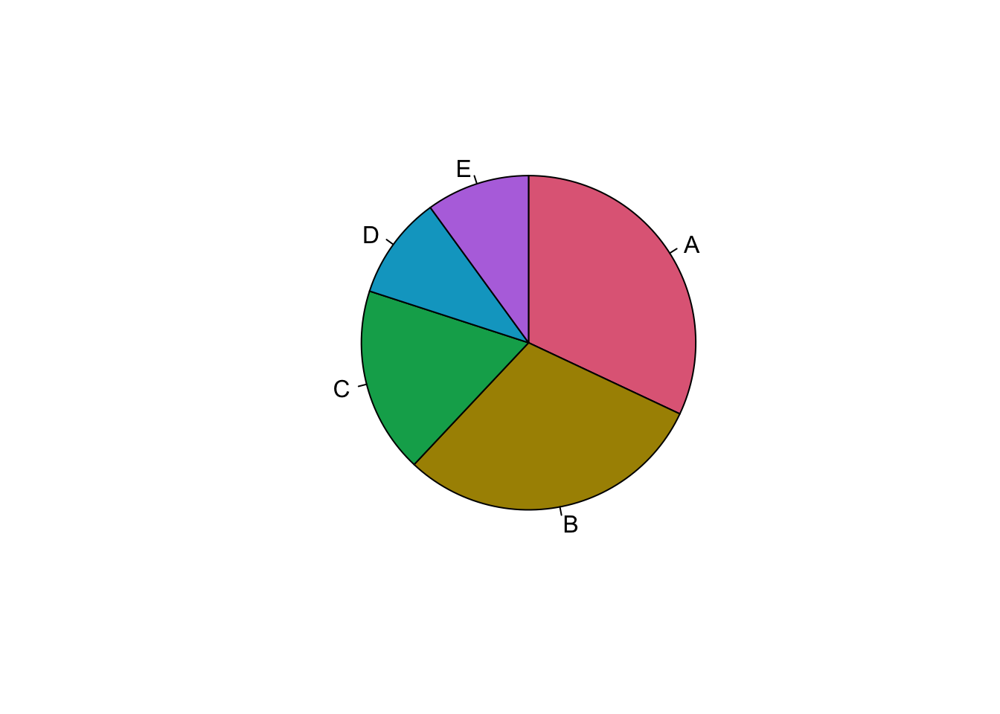

8 Diagramas de cajas (Boxplots)
Primeramente se cargan algunas de las librerías a utilizar
8.1 Chunk para librerías
library(mosaicData) # Paquete que contiene bases de datos
library(ggplot2) # paquete graficador de alto desempeño
library(colorspace) # Paleta de coloresSe presenta un ejemplo con gráfico de pastel
8.2 Pie Chart
Se genera un gráfico de pastel simple con sectores etiquetados y coloreados:
grupos <- c(18, 30, 32, 10, 10)
etiquetas <- c("A", "B", "C", "D", "F")
pie(grupos,etiquetas,col=c("red", "blue", "green", "yellow", "orange"))
Los sectores no cumplen las condiciones estudiadas, porque no están ordendos los porcentajes de forma descendente:
## [1] "#E16A86" "#AA9000" "#00AA5A" "#00A6CA" "#B675E0"## [1] TRUEgrupos <- c(32, 30, 18, 10, 10)
etiquetas <- c("A", "B", "C", "D", "E")
pie(grupos,etiquetas,col= colmuestra, clockwise = T)
8.3 Paleta de colores
En r se pueden utilizar múltiples gamas de colores. Para conocer las posibilidades, es bueno explorar la paleta de colores.
En el ejemplo anterior, se escogió un gama de colores y se extrajo una muestra en forma de vector, esto porque los comandos de gráfico requieren usualmente, un vector de colores para el parámetro fill o colour

8.4 Diagrama de cajas
Se usará la base de datos que trae R por defecto llamada Iris, la cuál contine información sobre el ancho y largo de sépalo y pétalo.
## 'data.frame': 150 obs. of 5 variables:
## $ Sepal.Length: num 5.1 4.9 4.7 4.6 5 5.4 4.6 5 4.4 4.9 ...
## $ Sepal.Width : num 3.5 3 3.2 3.1 3.6 3.9 3.4 3.4 2.9 3.1 ...
## $ Petal.Length: num 1.4 1.4 1.3 1.5 1.4 1.7 1.4 1.5 1.4 1.5 ...
## $ Petal.Width : num 0.2 0.2 0.2 0.2 0.2 0.4 0.3 0.2 0.2 0.1 ...
## $ Species : Factor w/ 3 levels "setosa","versicolor",..: 1 1 1 1 1 1 1 1 1 1 ...boxplot(Sepal.Length ~ Species, data = iris,ylab = "Largo Sepalo (cm)", main = "Medidas en la Tabla Iris",boxwex = 0.5,col="red")- Sepal.Length ~ Species: Especifica la relación entre la longitud del sépalo y la especie de flor.
- data: El conjunto de datos iris.
- ylab, main: Etiquetas para el eje Y y el título del gráfico.
- boxwex: Define el ancho de las cajas.
- col: Color de las cajas.
En el caso de virgínica, se puede detectar un dato atípico en la parte inferior del gráfico de caja
Seguidamente se trabajará con un ejemplo de una base de datos tomada del paquete mosaicData, que contie datos de vivienda de la comunidad de Saratoga County, New York, USA, 2006
casas <- SaratogaHouses
# graficos descriptivos cuandoe en el eje x tengo una variable categórica
g1 <- ggplot(casas, aes(centralAir, price))
g1 + geom_boxplot(alpha = 0.4, color = "blue") # Los puntos azules no son datos crudos, son puntos del Boxplot, los outliers o valores atípicos- aes(centralAir, price): Relaciona el sistema de aire acondicionado con el precio de las casas.
- geom_boxplot(): Añade el gráfico de cajas al gráfico base.
- alpha: Controla la transparencia del gráfico.
- color: Define el color de las cajas.
# graficos descriptivos cuandoe en el eje x tengo una variable categórica
gg1 <- ggplot(casas, aes(centralAir, price))
gg1 + geom_jitter(width = 0.3, alpha = 0.4) +
geom_boxplot(alpha = 0.4, color = "blue") # Los puntos azules no son datos crudos, son puntos del Boxplot, los outliers o valores atípicosTambién se combinan gráficos de dispersión (jitter) con gráficos de cajas y violines para una visualización más completa de los datos:
gg1 + geom_jitter(width = 0.3, alpha = 0.4) +
geom_boxplot(alpha = 0.4, color = "blue") +
geom_violin(aes(alpha = 0.3, fill = centralAir))- geom_jitter(): Añade puntos dispersos al gráfico para representar la distribución de los datos.
- geom_violin(): Añade un gráfico de violín para mostrar la densidad de los datos.